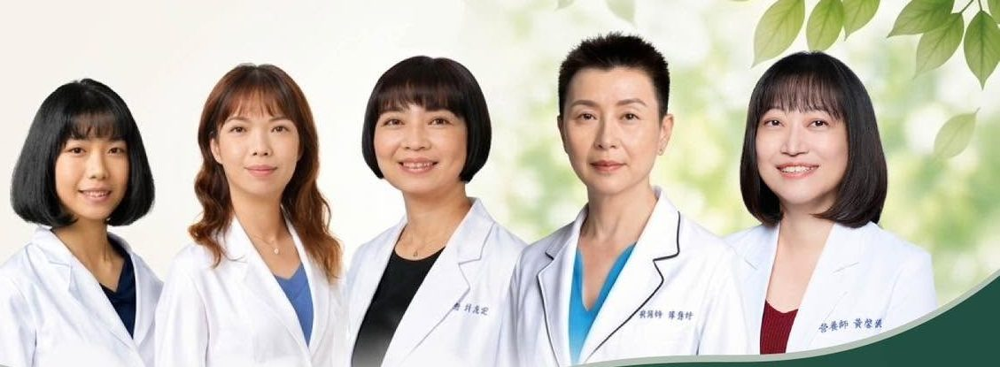

營養師團隊
營養師與物理治療師、職能治療師一起合作，從吃得下，到走得動。

營養師
-

彭美英 營養師
非比營養諮詢中心 負責人
專長
- 多重疾病營養整合照護
- 長照居家營養照護、社區營養講座
- 職場健康營造營養講座講師
- 照顧服務員訓練營養課程講師
- 國健署預防及延緩失能模組師資
- 安養護機構評鑑及營養部門業務規劃
學經歷
- 台北醫學大學保健營養技術學系
- 臨床、長照、社區、執業營養師資歷 30 年
- 新竹縣市居家復健服務計畫營養師
- 桃竹地區安養護機構、護理之家營養師
- 佳音營養諮詢中心營養師
- 國軍桃園總醫院營養師
- 國軍花蓮總醫院營養師
- 南門綜合醫院營養員
114 年度資深營養師服務奉獻獎（中華民國營養師公會全國聯合會）
-

黃馨儀 營養師
專長
- 疾病營養調理、功能醫學營養
- 個人化營養保健處方評估與建議
- 瘦身減重、運動營養、長照居家營養照護
- 居家安寧臨終照護、生命教育
- 民眾、社區或企業健康講座
學經歷
- 中山醫學大學營養學系
- 瑞之盟營養機構 居家營養師
- 億家安居家物理治療所 居家營養師
- 財團法人老五老基金會 新竹日照中心營養師
- 財團法人新竹縣天主教世光教養院營養師
- 新竹市衛生局合作社區營養師
- 台北市安民家庭醫學診所 營養師
證照
- 整合功能醫學臨床培訓營養師
- 中華民國糖尿病衛教學會 糖尿病衛教師
- 糖尿病共同照護網醫事人員
- 長期照顧醫事人員 Level I、II、III 培訓
- 大悲學苑安寧靈性關懷人員培訓中
- 新北市失智守護天使講師
- 初級體適能指導員
- 大豆食農種子講師培訓
-
楊懿玲 營養師
專長
- 慢性疾病營養照護
- 減重營養照護
- 銀髮族營養照護
- 健康營養講座
學經歷
- 台北醫學大學保健營養學系
- 毓澄營養諮詢中心 營養師
- 佳音營養諮詢中心 營養師
- 臺大醫院新竹分院 營養師
證照
- 腎臟專科營養師
- 糖尿病衛教師
- 糖尿病共同照護網醫事人員
- 長照醫事人員
- 保健食品初級工程師
- 食品安全管制系統初級、進階
- 預防及延緩失能社區營養師
- CTSSN 運動營養專業認證
-
許秀珍 營養師
專長
- 中老年營養評估及疾病飲食指導（含保健處方與飲食減敏建議）
- 營養講座（生命期營養及疾病營養等客製化主題）
- 體重管理及運動營養
- 保健食品開發及行銷
學經歷
- 靜宜大學食品營養研究所營養組
- 外商與陸商保健食品公司高階主管
- 外商公司產品經理
- 大學、營養師考照補習班兼任講師（營養學、社區營養）
證照
- 肥胖研究學會體重管理營養師合格
- 長期照顧醫事人員
- 北市糖尿病及心血管疾病共照網醫事人員
- 專技營養師高等考試合格
- 專技營養師檢覈考試合格
- 教育部大學獨立學院及專科學校講師
- 國際墊上嬋柔（脊椎運動）L1 教練指導員
- 印度國際希瓦南達瑜伽導師培訓班合格
-
林
林美岑 營養師
帶領新竹慈濟靜思堂系列課程，教學員均衡飲食與食物質地軟化。
復能夥伴
-
江佳慧 物理治療師
資歷
- 樂心築居家物理治療所 負責人
- 前新竹馬偕醫院復健科 物理治療師
專長
- 骨折、腦傷及中風術後復健與衛教
- 安養護機構活動規劃
- 日照中心活動規劃
- 社區、據點衛教
-
林佩萱 職能治療師
資歷
- 樂心築居家物理治療所 居家職能治療師
- 前新竹馬偕復健科 職能治療師
專長
- 成人生理職能治療
- 長照居家職能治療
- 環境輔具評估建議